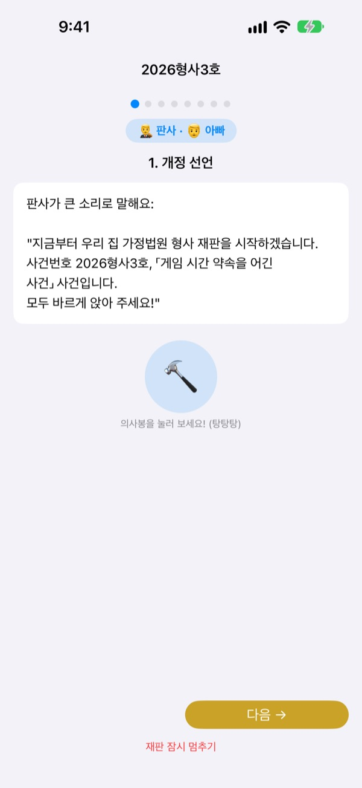
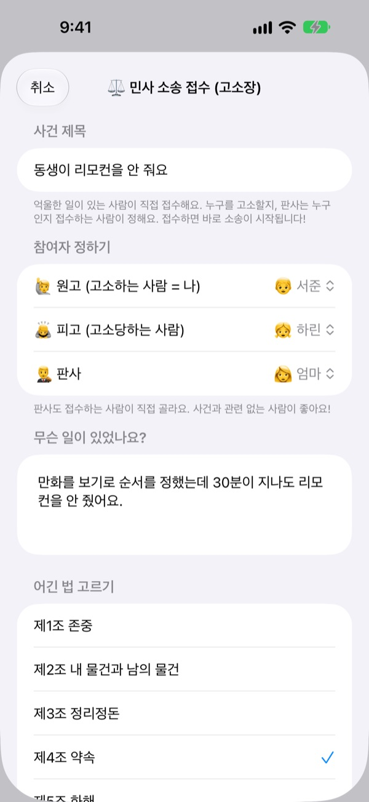
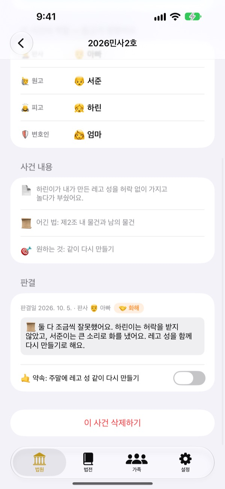
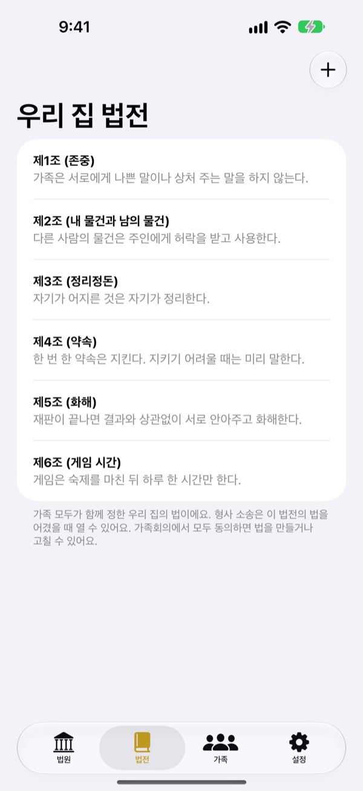

억울한 일,
울지 말고 재판으로 풀어요
아이가 직접 원고가 되어 고소장을 내고, 가족이 판사와 변호인을 나눠 맡아요. 단계마다 누가 무슨 말을 할 차례인지 대사로 알려 주니 처음이어도 진짜 재판처럼 흘러가요.
광고도, 결제도, 가입도 없어요. 기록은 이 기기 안에만 남아요.

재판 한 번 열어 보세요
‘동생이 리모컨을 안 줘요’ 사건을 짧게 열어 봐요. 위에서 말의 난이도를 바꾸고, 의사봉을 두드리고, 타이머를 켜 보세요. 소리가 나니 볼륨을 확인해 주세요.
“쟤가 먼저 그랬어!” 매번 누가 맞는지 정해 주느라 지치지 않나요?
다툼이 생기면 결국 어른이 판결을 내리고, 진 쪽은 억울해서 울고, 이긴 쪽은 왜 이겼는지 몰라요. 억울해요는 아이가 자기 이야기를 끝까지 말하고, 상대 이야기도 끝까지 듣게 만드는 순서를 줘요. 판결은 벌보다 약속으로 끝나요.
억울한 사람이 직접 고소해요
억울한 일이 있으면 그 사람이 원고가 되어 고소장을 접수해요. 누구를 고소할지, 누가 판사를 맡을지도 접수하는 사람이 정해요. 아이도 엄마 아빠를 고소할 수 있어요.
우리 집 법을 어긴 걸 봤다면 검사가 되어 형사 재판에 넘길 수도 있어요. 판사는 원고와 피고가 아닌 사람만 맡을 수 있어요.

벌보다 약속으로 끝나요
판결과 함께 지킬 약속이나 벌칙을 정하고, 지켰는지 끝까지 체크해요. 끝난 사건은 우리 집 판례로 쌓여요.
추천 벌칙은 되돌려 놓기, 마음 돌려주기처럼 처벌보다 회복에 가까운 것부터 보여 줘요. 게임과 TV 줄이기는 마지막 수단이에요.

우리 집 법은 우리가 정해요
존중, 정리정돈, 약속처럼 가족이 함께 정한 규칙을 조문으로 적어 두고 언제든 더하거나 고쳐요. 고소장에는 어긴 법을 골라 적어요.
법원 공부하기에서는 판사, 원고, 검사, 변호인이 하는 일과 재판 순서를 배울 수 있어요.

시작은 세 단계면 돼요
- 1
가족을 등록해요
이름과 이모지만 있으면 돼요. 계정은 필요 없어요.
- 2
사건을 접수해요
억울하면 민사, 우리 집 법을 어겼으면 형사로 접수하고 판사를 골라요.
- 3
재판을 열어요
대사를 따라 하고, 타이머로 시간을 지키고, 의사봉으로 판결을 선고해요.
아이 나이에 맞춰 바뀌는 말
- 판사
- 쉬운 말: 심판 · 법정 용어: 재판장
- 원고
- 쉬운 말: 억울한 사람 · 법정 용어: 원고
- 피고
- 쉬운 말: 대답하는 사람 · 법정 용어: 피고
- 검사
- 쉬운 말: 신고한 사람 · 법정 용어: 검사
- 피고인
- 쉬운 말: 대답하는 사람 · 법정 용어: 피고인
- 변호인
- 쉬운 말: 도와주는 사람 · 법정 용어: 변호인
- 민사
- 쉬운 말: 억울해요 · 법정 용어: 민사
- 형사
- 쉬운 말: 약속 어김 · 법정 용어: 형사
설정의 어휘 난이도에서 고르면 화면과 대본의 말이 한꺼번에 바뀌어요. 유치원생은 쉬운 말, 초등학생은 기본부터 시작해 보세요.
자주 묻는 질문
몇 살부터 쓸 수 있나요?
글을 읽을 수 있는 어린이라면 부모와 함께 즐길 수 있어요. 대본과 안내가 있고 어휘 난이도를 ‘쉬운 말’로 바꾸면, 어른이 읽어 주며 더 어린 아이도 함께할 수 있어요.
정말 무료인가요?
네. 광고도, 기능을 여는 결제도 없어요. 설정에 개발자를 응원하는 팁이 있지만 고르는 건 자유이고, 아무 기능도 열거나 잠그지 않아요.
인터넷 연결이 필요한가요?
필요 없어요. 재판과 기록은 모두 오프라인으로 동작해요. 설정의 피드백 보내기로 의견을 보낼 때만 인터넷과 iCloud 로그인이 필요해요.
기록은 어디에 저장되나요?
가족, 법전, 재판, 판결 기록은 기기 안에만 저장되고 서버로 보내지 않아요. 개발자에게 닿는 건 직접 보낸 의견과, 누가 썼는지 알 수 없는 익명 사용 통계뿐이에요.
기록을 백업하거나 다른 기기로 옮길 수 있나요?
설정의 ‘기록 저장’으로 데이터를 파일로 내보내고, 다른 기기에서 ‘기록 불러오기’로 그 파일을 읽으면 그대로 복원돼요. 예전 웹 버전에서 내보낸 백업 파일도 불러올 수 있어요.
아이패드에서도 되나요?
네. iPhone과 iPad 모두에서 쓸 수 있어요. 큰 화면에 띄워 두고 가족이 둘러앉아 재판하기 좋아요.
벌칙이 너무 세지면 어떡하죠?
검사가 벌칙을 말하는 단계에서 ‘너무 무겁지 않게, 지킬 수 있는 것으로’라고 대본이 짚어 줘요. 추천 벌칙도 되돌려 놓기, 마음 돌려주기, 입장 바꿔 보기처럼 관계를 회복하는 것부터 보여 줘요.
데이터를 완전히 지우고 싶어요.
앱을 삭제하면 기기에 저장된 모든 기록이 함께 지워져요. 외부로 나간 기록이 없으니 따로 남는 곳도 없어요. 피드백으로 보낸 의견을 지우고 싶다면 메일로 알려 주세요.
버그, 기능 제안, 그 밖에 무엇이든 leeo@kakao.com로 편하게 보내 주세요. 앱 설정의 피드백 보내기로도 보낼 수 있어요.